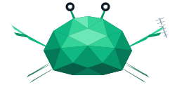

{{STATION_NAME_HTML}}
{{STATION_SUB}}
🔊 Ton einschalten
–
Hörer
Chat
Hören
Digital
Logbuch
Info
◐
EN
–
kHz
−−−
−−
−
+
++
+++
🔗
Teilen
Mitte
−10
−1
−½
MHz
+½
+1
+10
Liste
A/B
A=B
.0
Merken
Raster
aus
5 kHz
6,25 kHz
10 kHz
12,5 kHz
25 kHz
Betriebsart
FM
AM
USB
LSB
CW
Squelch
6 dB
AGC
schnell
mittel
langsam
Stumm
Bandbreite
−
?
kHz
+
Signal
0
10
20
30
40
50
60 dB
–
dB über Rauschen
Verlauf
aus
schnell
langsam
Aufnahme
start
Browser unterstützt das Herunterladen der Aufnahme nicht.
Lautstärke
🔈
🔊
●
Aufnahme
Wasserfall
−
+
ganzes Band
max. Zoom
Alle Bänder zeigen
Aktives oben festhalten
Tempo
langsam
mittel
schnell
Höhe
Bildschirm füllen
klein
mittel
groß
Ansicht
Spektrum
Wasserfall
schwache Signale
starke Signale
Helligkeit
Kontrast
Standard
Relais und Frequenzen
✕
Klick stimmt ab.
MHz
Rufzeichen
Info
Ablage
Ton
km
Quelle
Tastatur
← →
abstimmen: SSB/CW 100 Hz, FM/AM ein Kanal im Raster (Umschalt ×5, Strg ×25)
↑ ↓
SSB/CW: nächster voller kHz (Umschalt: 10 kHz) · FM/AM: ein Kanal im Raster
1 … 5
Band wählen
B
nächstes Band
F A U L C
FM · AM · USB · LSB · CW
+ −
Wasserfall zoomen
Z
ganzes Band
M
stumm an/aus
G
Frequenz eingeben
R
Aufnahme starten/stoppen
T
Chat öffnen und schreiben
P
Relais- und Frequenzliste
?
diese Hilfe
Schließen
–
FM
AM
USB
LSB
CW
SQ
🔇
☰
🔊